学术链接
| 个人学术主页@不来梅大学 |
|
||
| ORCID (0000-0002-6850-9570) | |||
| 谷歌学术 (GyLOsRwAAAAJ) | |||
| ResearchGate (Hui-Liu-149) | |||
| Scopus (57196004640) | |||
| Sematic Scholar (2146672447) | |||
| 欢迎您将最新学术成果投稿! | 面向人体动作的传感器研究 特刊 |
研究领域
| 生物医学工程 Biomedical Engineering (BME) |
● 康复学辅助技术 ● 关节炎治疗和膝盖护具 ● 辅助医疗的移动应用程序（APP） ● 面向生医工的虚拟现实（VR）和混合现实（MR） |
| 可穿戴式传感器 Wearables |
● （无线）生理传感器网络（WBSN/BSN） ● 体域网（BAN） ● 惯性传感器和惯性测量单元（IMU） ● 肌电传感器（EMG）和电子量角器 ● 其它生物传感器 ● 普适计算 |
| 大数据建模、分析与研究 Big Data |
● 多模数据可视化 ● 统计学大数据分析 ● 大数据采集的计划、组织和后处理 ● 自动和半自动数据分割与标定 ● 人体动作数据集开源 |
| 数字信号处理 Digital Signal Processing (DSP) |
● 多信道、多传感器生物医学信号处理 ● 预处理技术和特征提取 ● 时序信号处理 ● 生物医学信号和人机交互界面设计 |
| 机器学习和人工智能 Machine Learning (ML) Artificial Intelligence (AI) |
● 特征选择 ● 特征降维 ● 早期融合和后期融合 ● 隐马尔可夫模型 (HMM) ● 各类人工神经网络 ● 模型训练、识别和评估 |
| 人体动作识别 Human Activity Recognition (HAR) |
● 提出人体动作识别研究总框架 HAR-Pipeline ● 全新人体动作建模法 Motion Units ● 人体信号采集、处理和识别软件开发 ● 实时人体动作识别系统 ● 即插即用的新动作识别 ● 内部传感和穿戴式计算 |
| 音乐信息处理 Music Information Retrieval (MIR) |
● 旋律谱面特征提取 ● 基于MIR的业余演唱辅助 ● 谱面信息与音频信号的协同处理和研究 |
|
（ 研发出第一款可实时识别人体动作、提供医疗康复辅助的智能膝盖绷带 获第12届国际生物医学工程系统和技术联合会议 最佳论文奖（学生作者） 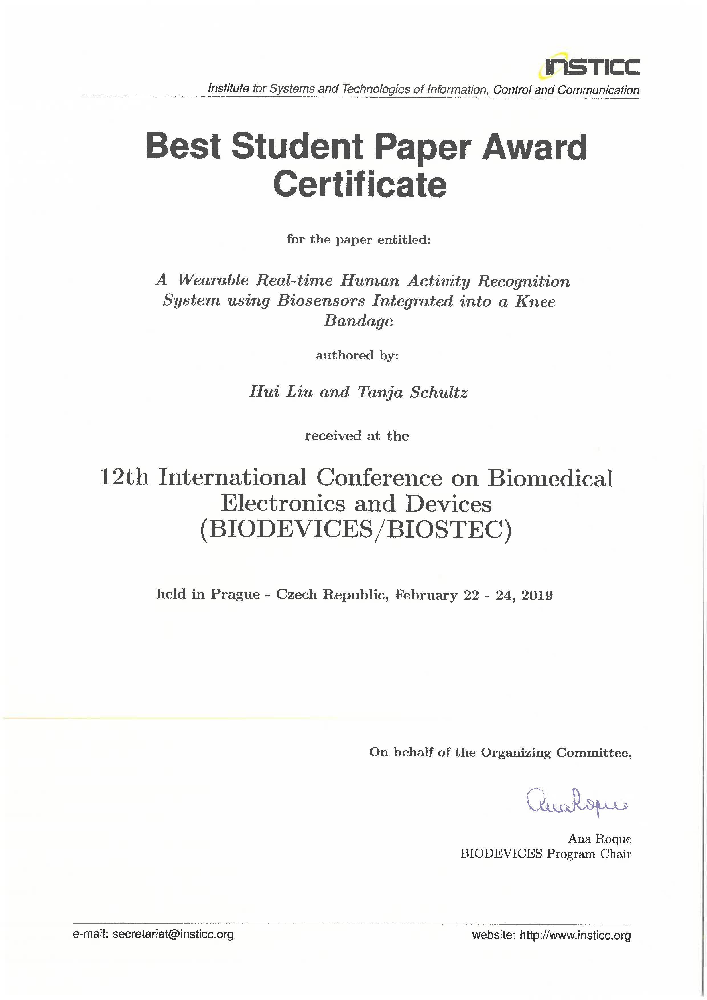 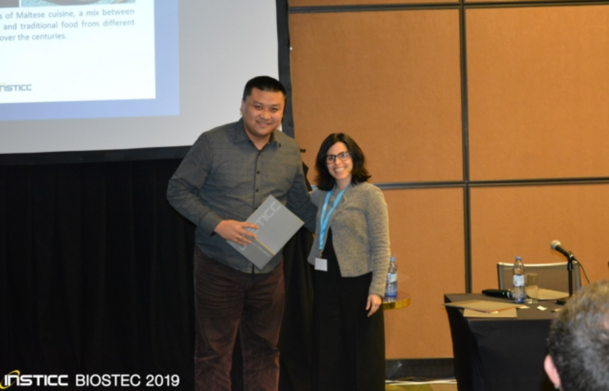 | |
学术发表
学术活动
MDPI Sensors 期刊 |
● 特邀编委 |
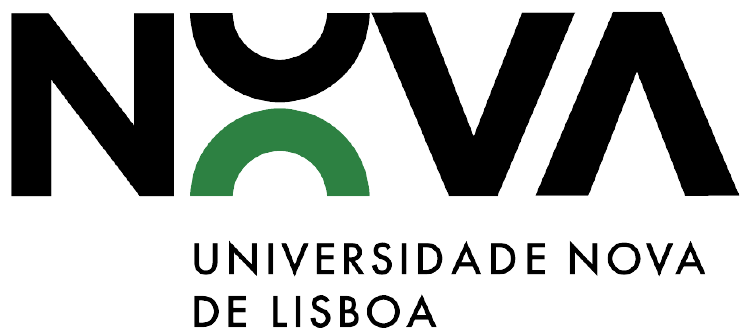 葡萄牙新里斯本大学 |
● 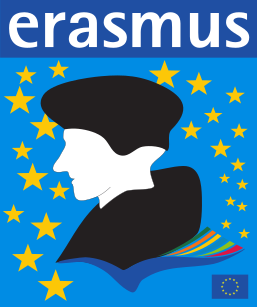 欧盟伊拉斯谟海外教学奖学金 |
Biosignals Notebooks |
● 传感器人工智能公益在线教程和代码开源 |
同济大学中德工程学院 德国杜塞尔多夫 2018 |
● 学术讲座：学术与艺术 |
第12届国际生物医学工 程系统和技术联合会议 捷克布拉格 2019 |
● 学术讲座：From Offline towards Real-Time |
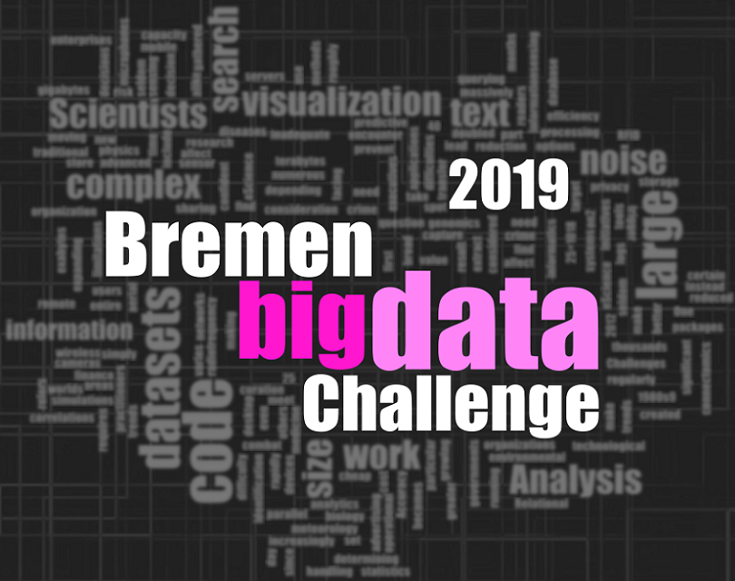 第4届北德大数据竞赛 BBDC 2019 |
● （独立承担）大数据采集、处理和提供工作 ● 北德数十所高校的60多支队伍参加最后的角逐 |
不来梅人工智能展览会 德国不来梅 2019 |
● 技术演示：实时人体动作识别系统 ● 互动演示：MR（混合现实）康复辅助游戏平台 ● 举办地： 弗劳恩霍夫协会数字医学研究所 |
“智慧头脑日”展览研讨会 德国不来梅 2021 |
● 技术演示：人工智能膝盖绷带 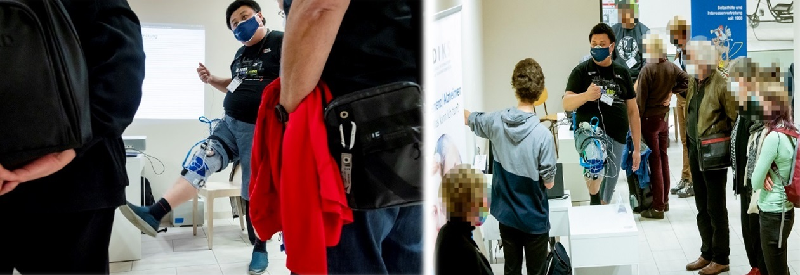 ● 举办地： 不来梅海外博物馆 |
第15届国际生物医学工 程系统和技术联合会议 奥地利维也纳 |
● 分会议主席：第十五届国际健康信息学大会 (HEALTHINF 2022) |
专业履历
|
2001 — 2004 上海市市西中学 |
● 高中，期间获得： ● 全国青少年信息学奥林匹克联赛提高组一等奖 （证书编号：I030473） ● 上海市CASIO杯程序设计竞赛高中组一等奖 |
|
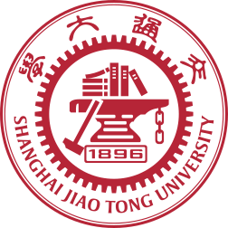 2004 — 2007 上海交通大学 电子信息与电气工程学院 通信工程专业 |
● 本科学位 ● 上海交通大学奖学金（三年） |
|
2007 — 2009 柏林工业大学 电子学与信息学系（四系） 信号传输专业 通信质量和适用性专业 机器视觉专业 |
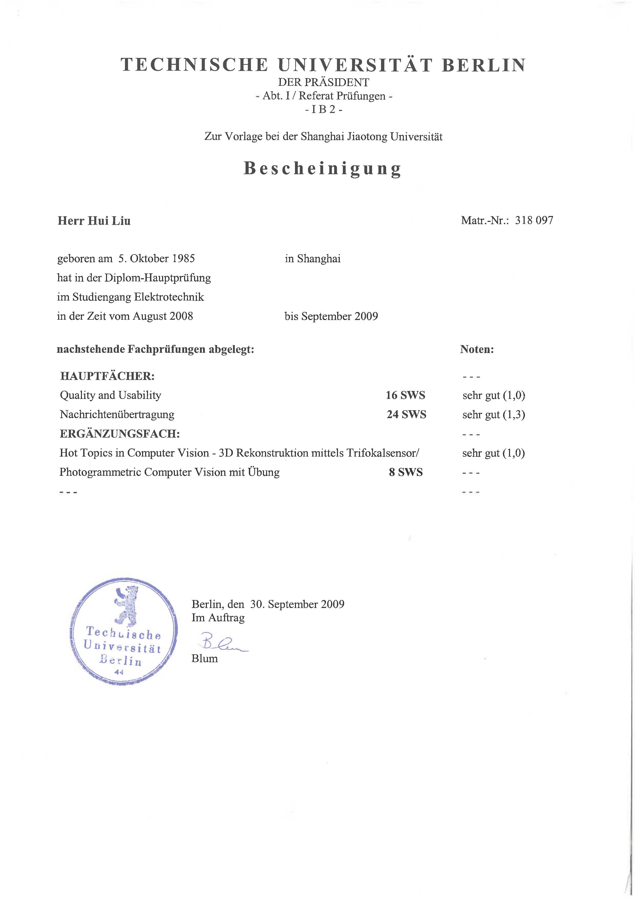 ● 第一硕士学位：Diplom-Ingenieur ● 课程平均分：1.0 ● 担任研究助理，于 弗劳恩霍夫协会赫兹通讯研究所 |
|
2009 — 2011 上海交通大学 电子信息与电气工程学院 通信与信息系统专业 |
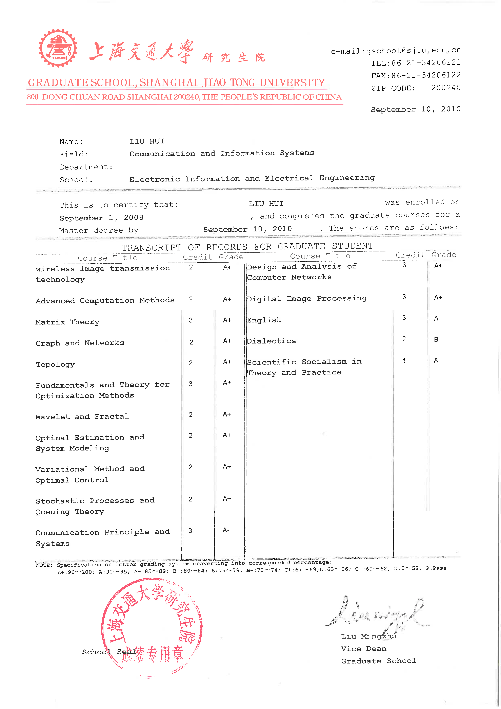 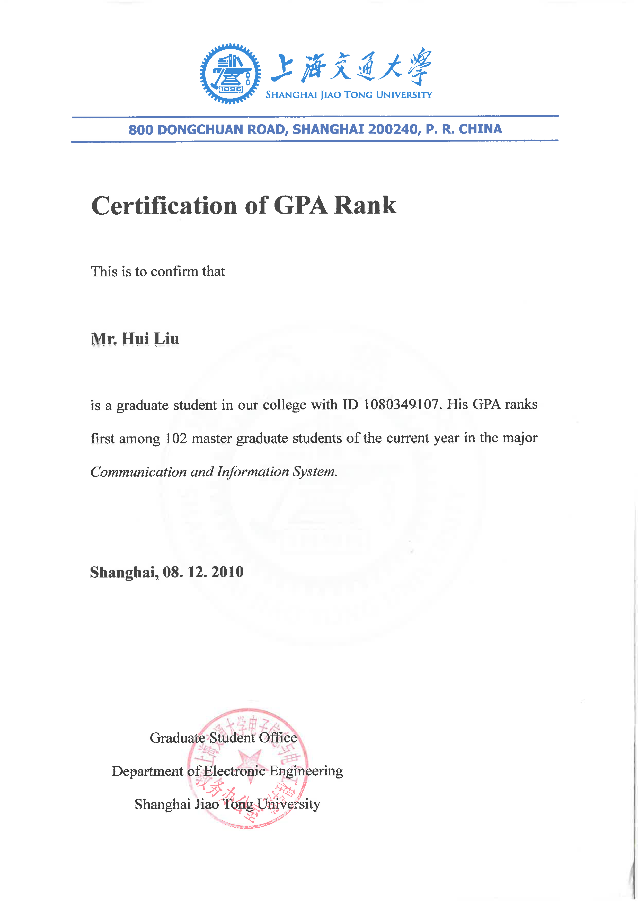 ● 第二硕士学位：Master of Science ● 学积分/积点/GPA：3.16/3.3 ● GPA排名：1/106 ● 国家优秀研究生一等奖学金 |
2012 — 2013 柏林工业大学 |
● 科研助理 ● 柏林工业大学校长奖学金 |
2014 — 2016 企业界工作 |
● 软件工程师 ● 负责集成开发项目 |
|
2016 — 2021 不来梅大学 数学和信息学系（三系） 认知系统实验室（CSL） |
● 科研项目和教学工作，2021年获工程学博士学位 ● 负责德国联邦经济事务和能源部 Arthrokinemat 项目 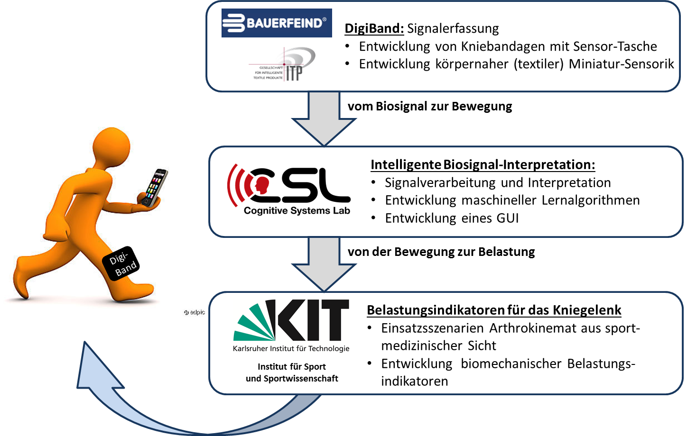 ● 研发首款实时识别人体动作、辅助康复的智能膝盖绷带 ● 最佳论文奖（学生作者） ● 建立广泛和密切的合作关系： 卡尔斯鲁厄理工学院 保尔范运动护具公司等 |
|
2021年以来 不来梅大学 |
● 博士后研究员 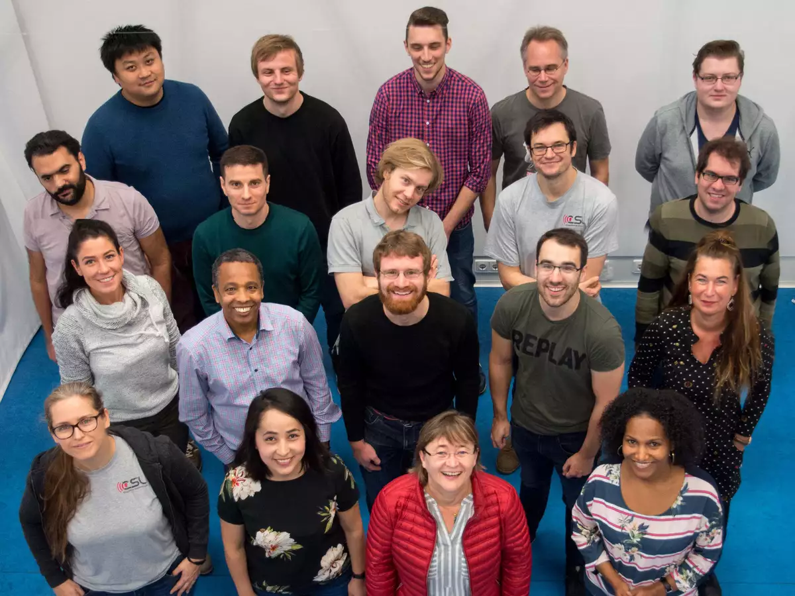 |
教学工作
|
2017年以来 生物医学信号和用户界面 |
● 课程组织和电子教学平台、部分授课任务 ● 习题课、线下和线上答疑 ● 试卷命题人、口试委员 ● 虚拟教学和线上同步指导负责人（疫情期间） |
|
2020年以来 机器学习导论 |
● 合作教学 ● 网络教学视频录制和制作（疫情期间） ● 负责聚类分析和聚类算法 |
|
2020 — 2021 科学工程实践: RobARinth |
● 引导项目实践 ● 提供生物信号传感器技术指导 |
|
2016 — 2018 软件工程II |
● 软件设计和软件工程教学 ● 指导小组实践 ● 组织参与客户会议和客户需求分析 ● 指导程序设计和代码优化 |
|
2010 — 2011 基本电路理论 |
● 助教 |
| 指导完成的有代表性的优秀学生毕业论文： | ||
| 2019 | Yale Hartmann | Implementation and Optimisation of a Human Activity Recognition System using Sensors integrated into a Knee Bandage |
| 2019 | Timo Urban | Entwicklung einer mobilen Anwendung für Echtzeit-Visualisierung und Archivierung von mehrkanaliger Biosignalaufnahme mit Bluetooth |
| 2020 | Lennard Mai | Automatische Segmentierung von Bewegungsdaten eines biosignalbasierten, in einer Kniebandage integrierten HAR Systems |
| 2020 | Yale Hartmann | Feature Selection for Multimodal Human Activity Recognition |
| 2021 | Kilian Lüdemann | Sturzerkennung in Infrarotvideos mit Hilfe von Rekurrenten Neuronalen Netzen |
| 2021 | Steffen Lahrberg | Direction Distinguishment in Wearable Sensor-Based Human Activity Recognition Using Cross-Channel Features |